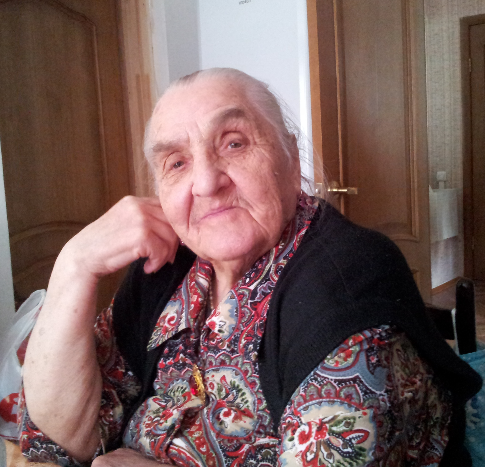

Книга памяти семьи
Родословная, фотографии и дословные русские воспоминания семьи: бережно разложенные по разделам, без правки текста мемуаров.

Родословная
Раскрывайте ветви семьи и выбирайте человека, чтобы увидеть связи и ссылки на тексты.
Мемуары
Русский текст опубликован дословно, разделами, без пересказа и редактирования.
Фотоархив
Персональные фотоальбомы открывают карточки людей и связаны с родословным деревом.